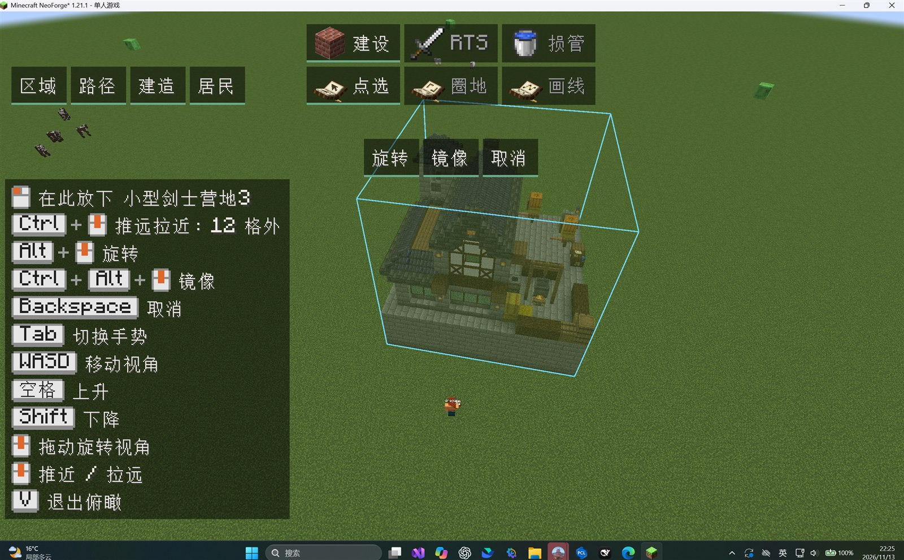

What works
Exact Do preview
The preview world reads textureData from blueprint block entities, so Do blocks no longer show missing materials.
Native build chain
Blueprint → build order → site → block-by-block placement, using the normal Folkways worker flow.
Materials Integration
Do blocks drop integration resources by primary material; the sorting workbench turns them into real building materials.
No OOM on large packs
Local blueprints are indexed lazily at startup; 7368 blueprints can be installed together.
Chinese names
ASCII file names stay unchanged; the UI shows Chinese through a name map without breaking ResourceLocation.
Selectable ground
blocksolidsubstitution is selected per pack/building through ground_blocks.json instead of being random.
In-game verification



Known issues
Do original blocks can cause incomplete conversion
Some Sword & Kingdom packs contain blocks that already exist in the original Domum Ornamentum pack. The converter keeps the original block_state and textureData where possible, but a few blocks may not convert fully to Do materials and can fall back to vanilla blocks. Check the ghost preview before placing.
Supply buildings still have an unknown bug
“Supply Camp” and related supply buildings still have an unresolved issue that can affect normal gameplay: a blueprint may preview correctly but fail to create an order, or the site may not continue. Back up important saves and do not use it as a core building yet.
Installation
Download the share package from the v1.0.0 release, then extract:
mods/folkways_ornamentum-1.0.0.jar
mods/folkways-vanilla-neoforge-1.21.1-*.jar ← patched core, required
mods/materials_integration-2.8.jar
folkways/blueprint/<pack>/ ← converted packs
config/folkways_ornamentum/blueprint_names_zh_cn.jsonThe stock folkways-vanilla core lacks lazy loading, the 64 MB read limit and the upload-name fix. Replacing only the addon jar will still fail.
Credits
- IzakyL / Folkways: colony framework and native workflow, MIT.
- Domum Ornamentum: material-textured building blocks.
- Materials Integration / 22angle: resource unification and sorting workbench.
- Sword & Kingdom pack authors and translators: blueprint and language sources.
This is an unofficial compatibility project, not an official Folkways fork.